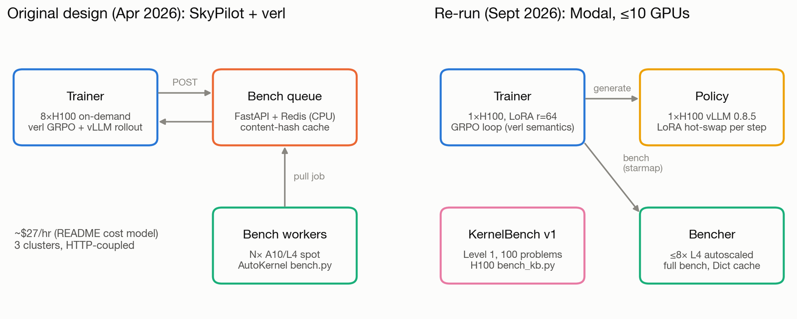

Method
The task, the verifier, the two rewards, the GRPO loop as it actually ran on Modal, and the SFT recipe that came after. Constants on this page are quoted from the named source files; measured numbers are loaded from the repo's results/ JSON.
1. The task
An agent (Qwen2.5-Coder-7B-Instruct) is given one of AutoKernel's nine kernel types (matmul, softmax, layernorm, rmsnorm, flash_attention, fused_mlp, cross_entropy, rotary_embedding, reduce), with the PyTorch reference and a working Triton starter. It must answer with a complete kernel.py that defines KERNEL_TYPE and kernel_fn.
Each answer goes to a GPU benchmark. The benchmark's per-stage verdicts, error messages and speedup are sent back as the next user turn, and the agent revises. One episode is this multi-turn conversation. GRPO used 4 turns per episode and the no-training base evaluation used 8 (modal_app/train_grpo.py, agent_eval.py).
- Prompt: reference implementation, starter
kernel.py, target GPU. - Turn t: the model writes a full
kernel.py. - Verify:
bench.pychecks correctness, then times the kernel against eager PyTorch. - Feedback: the stage results and speedup go back to the model. Repeat until the turn budget (or the context window) runs out.
- Score: one scalar reward for the whole episode: from its best PASS turn, or (reward v2 only) partial credit for its best non-PASS progress (section 3).
2. The verifier
AutoKernel bench.py (v1, used for all RL)
The upstream harness (results/autokernel_src/bench.py, unmodified) runs five correctness stages. Every stage must pass before a speed number counts.
| # | Stage | What it checks | Quick mode |
|---|---|---|---|
| 1 | smoke_test | Smallest size, first dtype, against the reference. If this fails, the other stages are skipped. | runs |
| 2 | shape_sweep | Every size × every dtype, with per-dtype atol/rtol. Reports “(k/n failed)”. | runs |
| 3 | numerical_stability | Adversarial inputs at the “small” size, first dtype: near-max (×60000 for fp16), near-zero (×1e-6), mixed scale, all zeros, all equal. Tolerance relaxed ×10. | skipped |
| 4 | determinism | Same input run 3 times; outputs must be bitwise identical. | skipped |
| 5 | edge_cases | Awkward, non-power-of-two sizes. | skipped |
Timing uses Triton do_bench against eager PyTorch on the reference, and speedup = teager / tkernel. Upstream prints its metrics to stdout and writes no results.tsv, so modal_app/bench_modal.py:parse_stdout reads stdout instead.
--quick skips stages 3 to 5. Under quick mode the rmsnorm and flash_attention starters PASS, but they FAIL the full bench. All rewards in this project use the full bench.
bench v2 (written after the RL runs)
When the RL kernels were re-checked, v1 turned out to be too lenient in some places and too strict in others. modal_app/bench_v2_core.py loads the same upstream sizes, dtypes and tolerances and changes only these things:
- Golden reference. The upstream reference is run on inputs upcast to fp64 (norms, softmax, cross-entropy, RoPE, reduce) or to fp32 with TF32 off (matmul, fused_mlp, attention). The kernel is compared to that, with no ×10 relaxation. rtol is floored at 2 units of roundoff for each dtype; this matters for bf16, where the upstream rtol of 2e-3 is below unit roundoff.
- Adversarial magnitudes. Each kernel type gets cases where the true output fits in the dtype but fp16 intermediates overflow, underflow or stall. Examples: rmsnorm rows at RMS 8 and 300 with N=4096, softmax/CE logits ×100, attention Q,K ×40. A non-finite output where the golden is finite is a FAIL. v1 passed a case when the kernel and the reference were both NaN.
- Fresh inputs. A new
os.urandomseed for every evaluation, non-trivial layernorm weight and bias, and real cos/sin for RoPE. There is no result cache. - Timing. CUDA events with a 256 MB L2 flush before each rep, implementations interleaved rep by rep, and a paired ratio against the starter with a bootstrap 95% CI. Eager PyTorch is timed alongside every kernel; separate baseline jobs add
torch.compileof the reference. - Launch check (val bench and SFT verifier:
val_bench_core.py,sft_verify_core.py). A PASS needs at least one@triton.jitlaunch during the correctness run. A pure-PyTorchkernel_fnfails (val bench: “no Triton kernel launched”; SFT verifier: verdictNO_LAUNCH).
The Verifier page covers the rescore of every old PASS kernel and the bug audit of the upstream references.
3. Rewards
Reward v1 original
src/autokernel-rlvr/agent_loop/reward.py
if no turn PASSes: r = 0
else: r = clip(log2(best_speedup), -1, 3)The +3 clip is log2(8×). Optional step shaping (±0.02 per PASS/CRASH) is off (USE_STEP_SHAPING = False).
Reward v2 GRPO v2
modal_app/reward_v2.py
PASS in any turn: r = 0.5 + clip(log2(best_speedup), 0, 3)
otherwise: r = 0.3 · max over turns of progress
progress = 0.25·[smoke_test PASS]
+ 0.50·(shape-sweep configs passed / total)
+ 0.25·[numerical_stability PASS]v2 fixes two problems that GRPO v1 exposed:
- Sparse signal. Under v1, any group where all eight samples failed scored 0 for every sample, so it gave no gradient. v2 gives partial credit for progress through the stages, which
bench.pyalready reports. - Reward floor. Under v1 a correct kernel slower than PyTorch scores log2(s) < 0, which is below a crash. Under v2 any PASS scores at least 0.5, and every non-PASS scores at most 0.3.
The v1 reward is still logged for every v2 episode, so both runs can be compared on the same metric.
4. The GRPO loop, as run
The original plan used verl. On Modal, modal_app/train_grpo.py runs a small hand-written loop that keeps verl's GRPO semantics. The trainer container runs the whole loop, so the laptop can disconnect.
# one scalar per trajectory, broadcast to its assistant tokens
A_i = (r_i − mean(r_group)) / (std(r_group) + 1e-6)
A_i = 0 if std(r_group) ≤ adv_min_std # v2: 0.02
# one on-policy step: ratio = 1 (PPO clip inactive), no KL; grad-norm clip 1.0
loss = − token_mean_over_batch( A · log π(token) )- Group-normalised advantage. The 8 trajectories for one task form a group. Tool and observation tokens are masked out, so only the model's own tokens get gradient.
- One on-policy update per batch. The PPO ratio is 1, so clipping never activates. Loss is token-mean (
loss_agg_mode=token-mean), and there is no KL term (verl's GRPO defaultuse_kl_loss=False). - Noise floor (v2). In v2, a group whose reward std is ≤ 0.02 counts as a tie. That threshold is about the bench's timing noise (stage 1 baselines: at most 1.89% CV on speedup, about 0.027 in log2 units, per the
train_grpo.pydocstring). In GRPO v1, which had no floor, 78.9% of the total |advantage| came from such noise-level groups.
| Setting | GRPO v1 | GRPO v2 |
|---|---|---|
| Policy | Qwen/Qwen2.5-Coder-7B-Instruct, bf16 | |
| Adapter | LoRA r=64, α=128, dropout 0; q,k,v,o,gate,up,down projections | |
| Optimiser | AdamW, lr 1e-5, β=(0.9, 0.999), no weight decay; gradient-norm clip 1.0 | |
| Group size / turns | 8 samples per task / 4 turns per episode | |
| Sampling | vLLM, temperature 1.0, top-p 0.95 (policy.py), ≤3072 new tokens per turn | |
| Bench GPU | L4, full mode | |
| Reward | v1 (reward.py) | v2 (reward_v2.py) |
adv_min_std | 0 (off) | 0.02 |
| Steps completed | 18 | 10 |
| Zero-advantage groups (mean) | 65% | 38% |
Why group 8 and 4 turns. The train_grpo.py docstring cites the no-training base eval: 4-sample groups tied (zero advantage) more often than 8-sample groups, and extra turns added more context than solves. Those figures come from the feedback-v1 eval. GRPO itself ran with the v2 feedback format, where the base eval had fewer ties and gained a little from turns 2 and 3 (see RL results).
Where the time goes. In GRPO v1, benchmarking took 60.5% of each step, generation 32.8% and the policy update 6.7%. The trainer H100 sat idle 93.3% of the time. Results are on RL results.
5. Modal topology
The Modal account allows at most 10 concurrent GPUs. One GRPO step uses all of them: the trainer and the vLLM policy each take one H100, and up to 8 L4 bench containers take the rest (BENCH_MAX_CONTAINERS = 8 in modal_app/common.py).
train_grpo.py, policy.py, bench_modal.py.)At list prices (results/numbers.json) an H100 costs $3.95/h and an L4 $0.80/h. The estimated cost was $18.84 for GRPO v1 and $11.15 for v2.
For comparison: the original SkyPilot design
The April 2026 design in src/autokernel-rlvr/ used three SkyPilot clusters coupled over HTTP. An 8-GPU on-demand trainer ran verl GRPO with vLLM rollouts. A FastAPI + Redis queue on a CPU node kept a content-hash reward cache, and spot single-GPU workers (A10/L4/4090) pulled jobs and ran bench.py. An AMD MI300X variant was also designed, but Modal has no MI300X, so that path is design-only. The original results were lost with an old disk. Every number on this site comes from the Modal re-run.

skypilot/trainer.yaml actually requests A100:8, with A40, L4 and RTX PRO 6000 as fallbacks.6. SFT recipe (after RL)
GRPO from the base model gave too little learning signal. Most groups had zero advantage, and 92% of the base model's solving turns on the validation set were near-copies of the starter. So the next phase taught correctness with supervised fine-tuning first. Summary:
- Data. 3022 train and 60 dev examples. Sources: Dr. Kernel cold-start (2707), in-repo AutoKernel trajectories (244) and KernelBook (71). 15% are repair examples: a failed attempt plus real bench feedback, followed by the fix.
- Verification. Every target was re-run on a GPU and kept only if it PASSed with at least one Triton launch. The set was decontaminated against KernelBench L1 and the 62-problem validation set.
- Training. LoRA r=64, α=128 on all linear layers. lr 1e-4, cosine schedule, 3% warmup, 2 epochs (378 steps), max length 4096. Loss only on the final assistant message (
results/v3/sft_runs/sft_v1/config.json,modal_app/sft_train_modal.py). - Result. On the validation set, pass@1 went from 0.383 to 0.508, and the compile-error rate fell from 8.1% to 1.9%. On KernelBench L1 (Triton), solves went from 0% to 20%. GRPO was not resumed after SFT, for budget reasons.
The SFT page has the full pipeline, the gates and the per-family results.